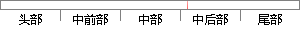

模糊子集 定义 为{ Z ，PS，PM，PB}， 输出量 量化到 论域 （0,3），根据
片段位置图

相似结果
相似片段：
ID控制器 设定输入变量e和ec语言值的模糊子集为{NB，NM，NS，Z，PS，PM，PB)，将偏差e和偏差变化率ec量化到(-3，3)的区域内。同样，设定输出量KP，KI和KD的模糊子集为{ZO，PS，PM，PB}，并将其量化到区域(0，3)内。根据参数KP，KI和KD对系统输出特性的影响情况，可得模糊控制规则为： 4 仿真结果 4．1 建立系统Simulink仿真框图 在Matlab的Simulink环境下根据图2设计出系统
| 对比库： | WriteCheck云资源库 |
| 来源： | partinchina.com.cn 查看来源 |
| 发布时间： | 2012-12-12 |
| 相似率 | 45.83% （轻度抄袭） |